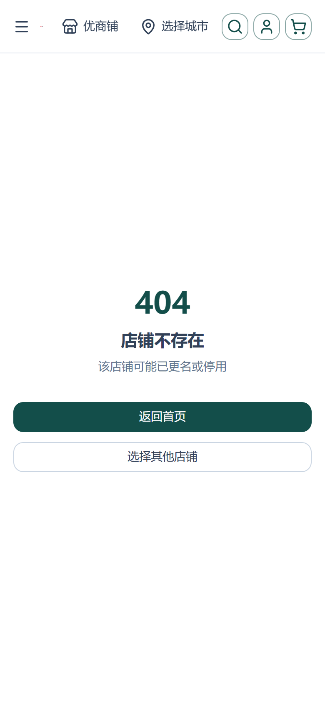
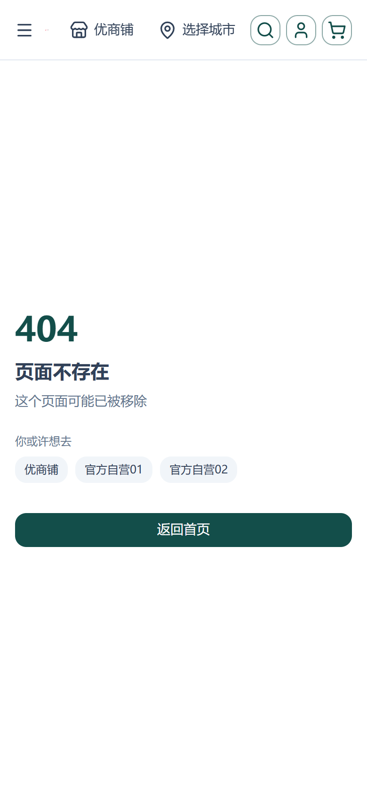
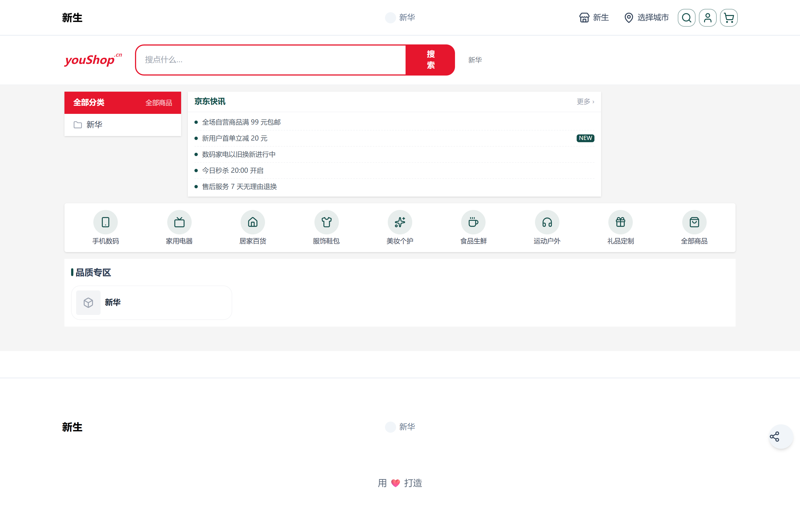
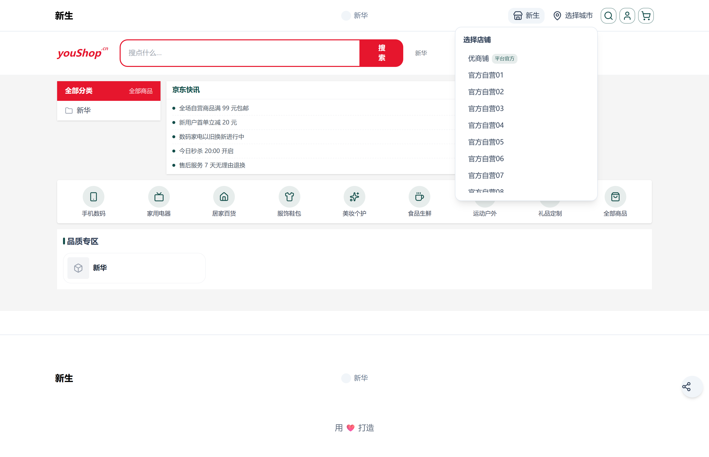
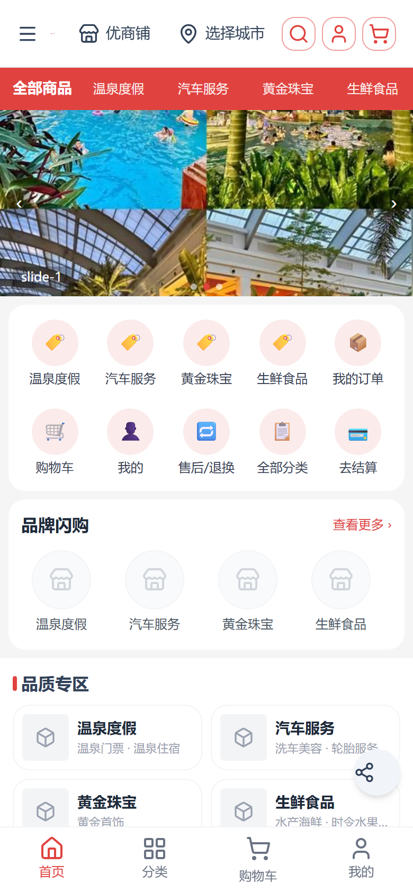
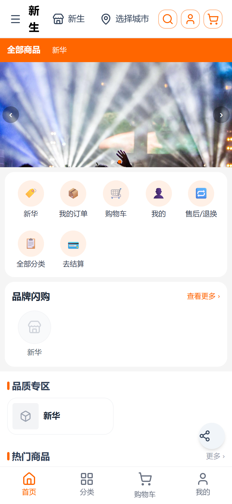
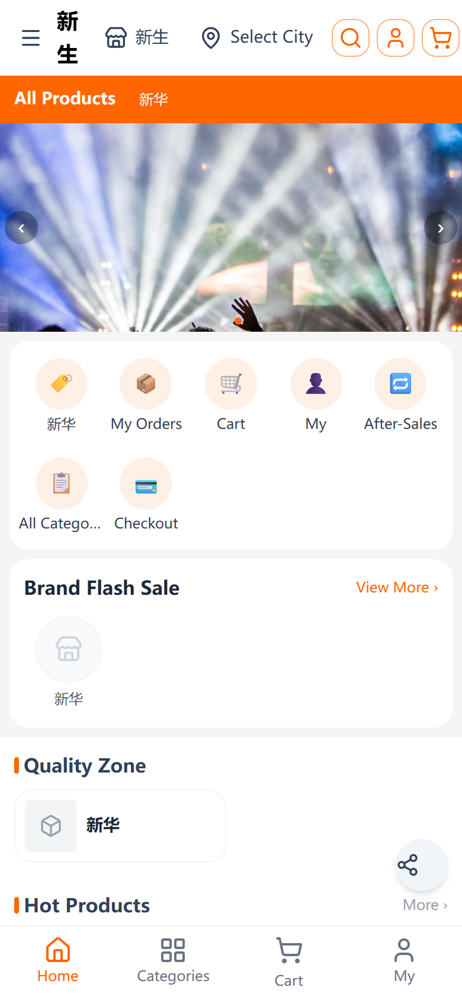
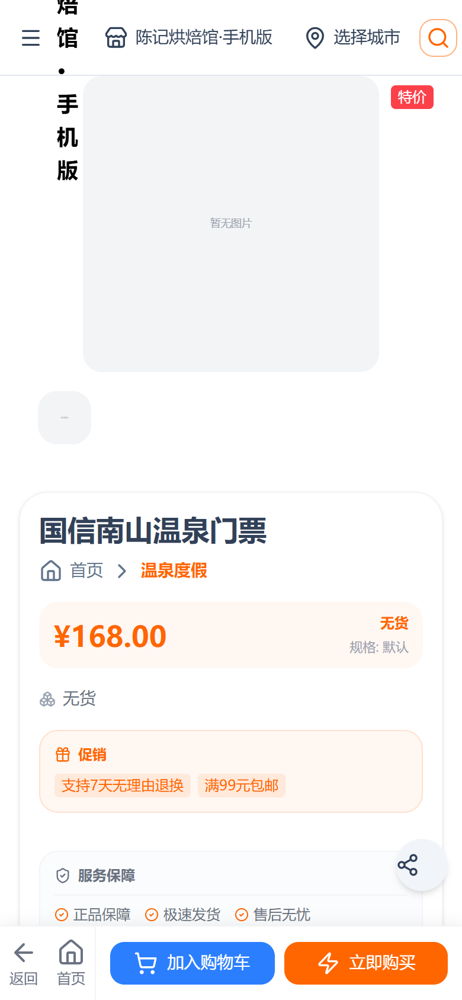
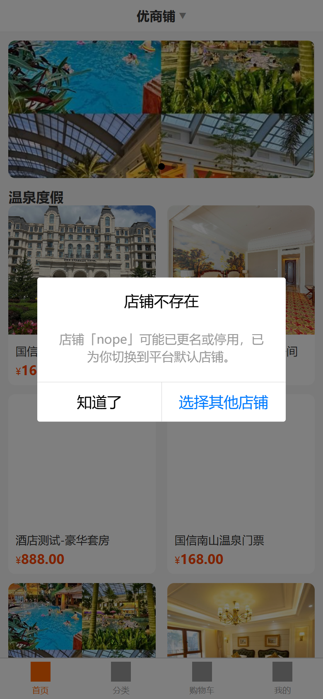

项目：nshop（用户端商城，www.youshop.cn）+ vshop（H5 商城，e.joho.cn）
设计：nshop/docs/superpowers/specs/2026-09-30-tenant-reachability-completion-design.md
实施计划：nshop/docs/superpowers/plans/2026-09-30-tenant-reachability-completion.md
状态：已部署上线并线上复验通过（2026-09-30）
补齐多租户「永久可达」的三块缺口，让用户无论通过 渠道前缀 URL、店铺自有域名 还是 失效链接 进入，都能落到正确的店铺，且不出现白屏 / 空导航：
/<code>/原路径，使站内链接天然带租户前缀（域名不变）。?tenant=<不存在> 由原「静默回退默认店」改为明示弹窗告知，与 nshop 的 404 行为一致。shopChannels，供页头切换器与错误页「选择其他店铺」共用（单点数据源）。| 层级 | 来源 | 实现位置 | 触发条件 / 结果 |
|---|---|---|---|
| 1. 路径首段 | /<locale?>/<code>/… | server/middleware/tenant.ts | 首段（跳过 i18n 前缀）命中已知渠道 → 写 event.context.tenant，放行 |
| 2. 访问域名 | 渠道 customDomains | server/utils/tenant-registry.ts#resolveTenantByDomain | 首段未命中 → 按 host 解析；命中非默认渠道 → 301 到 /<locale?>/<code>/原路径 |
| 3. 平台默认店 | __default_channel__ | 同上（默认渠道返回 null） | 域名绑定的是默认渠道 → 不 301（默认店本就不带前缀，零回归） |
| 4. 未命中 | — | layers/base/app/middleware/tenant.global.ts | Vue 路由层判定 404，data.kind = "shop-not-found"（逻辑页前缀不匹配 → page 版式） |
| 状态 | 触发条件 | 表现 |
|---|---|---|
| 200 | 首段命中渠道（或平台默认店无前缀） | 正常渲染该店铺 |
| 301 | 域名命中非默认渠道，且 URL 未带租户段 | 同域跳 /<code>/…（/en/product/x → /en/<code>/product/x，语言前缀保留在租户段之前） |
| 404 | 首段是租户段但渠道不存在/停用 | 错误页「店铺不存在」（店铺版式） |
| 404 | 已知租户段下路径不匹配 | 错误页「页面不存在」（页面版式 + 推荐店铺） |
server/middleware/tenant.ts）：/_（/_nuxt/、/_ipx/、/_og/）、/api/、/shop-api、/admin-api、/images/、/static/、/assets/；带扩展名的请求（favicon.ico、robots.txt、sitemap.xml 等）与明确声明非 HTML 的请求一律放行。
切换器与错误页共用同一份公开查询（无需鉴权），定义于 layers/base/gql/queries/tenant.gql，由 nuxt-graphql-client 生成 SDK 函数 GqlShopChannelsForSwitcher()，经 useTenantSwitcher() 消费：
query ShopChannelsForSwitcher {
shopChannels { code token name tenantNo isOfficial isDefault }
}
页头切换器采用按需懒加载（打开面板时才取数），避免 setup 期异步取数造成的页头水合失配。
scripts/_verify_online_tenant.py，2026-09-30 实测）| # | URL | 期望 | 实测 |
|---|---|---|---|
| 1 | https://www.youshop.cn/t1 | 200 | 200 |
| 2 | https://www.youshop.cn/t2 | 200 | 200 |
| 3 | https://www.youshop.cn/t3 | 200 | 200 |
| 4 | https://www.youshop.cn/official-01 | 200 | 200 |
| 5 | https://www.youshop.cn/en/t1 | 200 | 200 |
| 6 | https://www.youshop.cn/t24（已停用渠道） | 404 | 404 |
| 7 | https://www.youshop.cn/nonexistent-xyz | 404 | 404 |
| 8 | https://www.youshop.cn/zh/t1（zh 非前缀语言） | 404 | 404 |
| 9 | https://www.youshop.cn/t1/no-such-page-xyz | 404 | 404 |
| 10 | https://www.youshop.cn/no-such-shop-xyz | 404 | 404 |
文案断言 2/2 通过：404 页分别命中「店铺不存在」与「页面不存在」；页头切换器 SSR 已存在（HTML 含 i-lucide:store），且未挤掉城市选择器。
/api/tenant/resolve）| 请求 | 期望 | 实测 |
|---|---|---|
?code=t1&fresh=1 | {"status":"ok","code":"t1","name":"新生",…} | ok / 新生 |
?code=t24&fresh=1 | {"status":"unknown","code":"t24"} | unknown |
?code=__default_channel__&fresh=1 | {"status":"ok",…,"name":"优商铺"} | ok / 优商铺 |
scripts/_diag_domain301.py，15/15 PASS）在本地生产构建 + /shop-api 代理下，逐条请求下列 URL，断言全部不得为 301：
| 类别 | 用例 | 实测 |
|---|---|---|
| 平台域 / 常规路径 | localhost /、/t1、/en/t1、/product/foo | 不 301 |
| 接口 | /api/tenant/resolve、/shop-api、/admin-api | 不 301 |
| 静态资源 | /_nuxt/entry.js、/favicon.ico、/images/x.png、/static/x.png、/assets/x.png | 不 301 |
| 默认渠道域名 | Host: e.joho.cn → /、/t1、/product/foo | 不 301 |
customDomains 目前仅一条 e.joho.cn → __default_channel__（默认渠道按设计不 301），且该域服务的是 vshop。若需线上验收「域名直达」，请在部署侧给某渠道（如 t1）配一个 customDomains，并把该域 nginx server_name 指到 nshop 实例，然后执行：curl.exe -s -o NUL -w "%{http_code} %{redirect_url}" "https://<店铺域>/product/x" → 期望 301 https://<店铺域>/<code>/product/x。

/no-such-shop-xyz）：返回首页 + 选择其他店铺
/t1/no-such-page-xyz）：推荐店铺入口

scripts/_tenant_reach_shots.mjs）
/ → 优商铺
/t1 → 新生
/en/t1 → 新生（英文）
/t3/product/guoxin-nanshan-ticket → 命中渠道
?tenant=nope → 「店铺不存在」明示弹窗入口：e.joho.cn/?tenant=<code>。当 <code> 不存在或已停用时：
?tenant 并 reLaunch 到首页，由页头 TenantBar 重新选择。实现：vshop/src/stores/tenant.ts 新增 tenantInvalid 标记并在 initTenant() 失败时记录原始 code；vshop/src/App.vue 在 initTenant() 与 openTenantGate() 之间弹提示。
| 用例 | 期望 | 实测（线上） |
|---|---|---|
e.joho.cn/?tenant=t1 | 命中「新生」，不弹框 | 不弹框（vendure-token=t1） |
e.joho.cn/?tenant=nope | 弹「店铺不存在」，回退默认店 | 弹框（modal 节点 = 1） |
e.joho.cn/?tenant=no-such-shop | 弹「店铺不存在」 | 弹框 |
页头 TenantBar 店铺列表 | 真实店铺清单 | 25 项 |
customFields.customDomains 填入域名（如 shop.example.com）。server_name 指向 nshop 实例（默认店域名无需配置）。host 做 60s 正/负缓存（含负向缓存），最长 60 秒后自动生效；如需立即生效见 §7.3。https://shop.example.com/product/x → 应 301 到 https://shop.example.com/<code>/product/x。在后台停用（或删除）渠道后：该 code 的 URL 将返回 404 店铺不存在，错误页给出「返回首页 / 选择其他店铺」出口；vshop 侧 ?tenant=<该 code> 将弹明示提示并回退默认店。租户表为 60s SWR，缓存未过期前最长有 60 秒窗口仍可访问。
店铺清单走前端 GQL 直连后端（实时）；真正受 60s SWR 影响的是路由解析。入口有两处：
/api/tenant/resolve?code=<code>&fresh=1 强制刷新租户表（带 5s 频控，防高频刷爆后端）。curl "https://www.youshop.cn/api/tenant/resolve?code=<code>&fresh=1"。git revert 相关提交 → node scripts/deploy.mjs（本地构建 → scp → pm2 restart nshop）。.../sites/e.joho.cn/index.bak_<epoch> 备份目录覆盖回站点目录（见 vshop 手册 §6.4）。| 端 | 机制 | 状态 |
|---|---|---|
| nshop C 端 | 本地 pnpm build → scripts/deploy.mjs（scp .output → 服务器 pm2 restart nshop） | 已部署（online） |
| vshop H5 | 本地 npm run build:h5 → tar → scp → 解压到 .../sites/e.joho.cn/index（备份轮转） | 已部署 |
| 后端 vendure | 本轮零改动（shopChannels / resolveChannelByDomain 已存在） | — |
部署铁律：一律本地构建，服务器只解压 + 重启，绝不在服务器构建。